소개
SOOP·CHZZK 다시보기(VOD)를 볼 때, 다른 스트리머의 같은 시점 다시보기를 찾아주거나 채팅·타임라인을 다루는 편의 기능을 모은 확장 프로그램입니다.
- SOOP · CHZZK 라이브 당시 시간 표시, 플랫폼 간 동기화, RP 패널 등
- SOOP 댓글 타임라인 편집·삽입, 이전 채팅 복원, 반복 재생 등
설치: Chrome 웹 스토어 · Tampermonkey(SOOP 동기화만)는 GreasyFork
라이브 당시 시간 표시
SOOP · CHZZK 재생 바 근처에 방송 당시 시각이 표시됩니다.
- 표시된 시간을 더블 클릭하여 수정해 입력하고 Enter 키를 누르면 해당 시점으로 VOD가 재생됩니다.
- 마우스를 올리면 도움말 툴팁이 뜹니다. 입력 중 방향키로 플레이어 앞/뒤 이동이 겹치지 않도록 처리되어 있습니다.
- 복사 시에는 글자·배경 스타일 없이 텍스트만 복사됩니다.
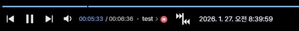
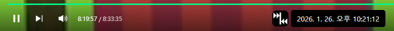
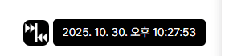
CHZZK에서 라이브가 매우 길어 다시보기가 여러 개로 나뉜 경우, 표시 시각이 어긋날 수 있습니다.
다시보기 동기화
SOOP · CHZZK 사이트 기본 검색창에 스트리머를 검색하면 결과에 다시보기 동기화 버튼이 생깁니다.
- 버튼을 누르면 현재 보고 있는 VOD 시점과 맞는 상대 스트리머의 다시보기를 찾아 새 탭으로 엽니다.
- 처음 사용 시 팝업 차단을 해제해야 할 수 있습니다.
- 검색어 입력 후 Ctrl+Shift+Enter로 첫 번째 다시보기 동기화 버튼을 바로 누를 수 있습니다.
- 동기화에 성공하면 검색 영역이 정리됩니다.
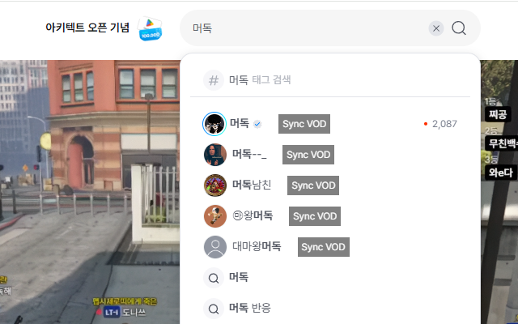
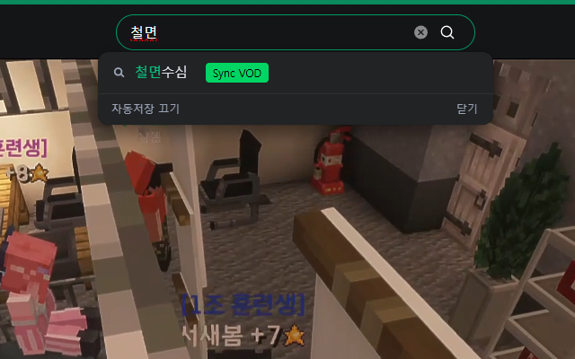
데모 영상
타 플랫폼과 동기화
SOOP · CHZZK 플레이어 옆 패널에서 다른 플랫폼 스트리머를 검색해 동기화합니다.
- SOOP VOD에서는 CHZZK 스트리머와, CHZZK VOD에서는 SOOP 스트리머와 시점을 맞출 수 있습니다.
- 패널 이름은 플랫폼에 맞게 통합되어 있습니다.
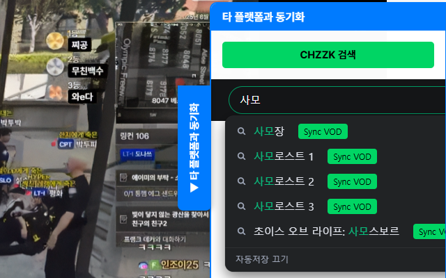
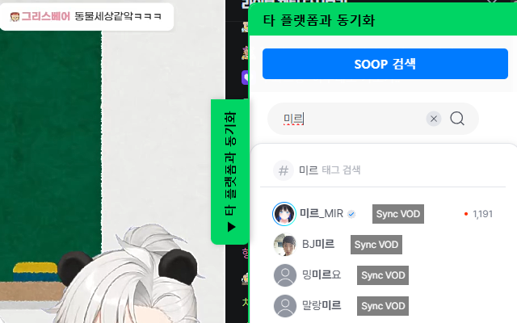
데모 영상
전역 동기화
SOOP · CHZZK 현재 탭의 VOD를 기준으로, 다른 탭에 열려 있는 VOD들을 한 번에 맞춥니다.
- 재생 바 근처의 전역 동기화 버튼으로 실행합니다.
- VOD 페이지를 벗어나면 버튼은 사라집니다.
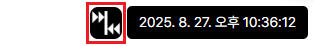
데모 영상
타임라인 댓글 동기화
SOOP 타임라인이 들어간 댓글을 다른 스트리머 다시보기로 옮길 때, 시점에 맞게 변환할 수 있습니다.
- 댓글 우측 상단의 동기화할 때 이 타임라인을 변환을 켠 뒤 동기화하면, 열린 다시보기에서 변환된 타임라인을 확인·미세조정·복사할 수 있습니다.
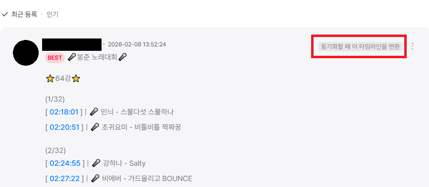
데모 영상
타임라인 편집기
SOOP 동기화 없이도 댓글 내용에서 타임라인을 꺼내 편집·복사할 수 있습니다.
- 타임라인이 있는 댓글의 더보기(⋮)에서 타임라인 편집을 선택합니다.
- 미세조정 시 Shift를 누르면 10초 단위로 증감합니다.
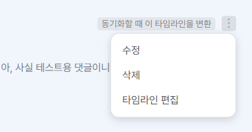
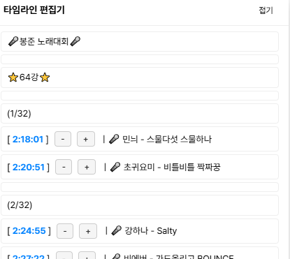
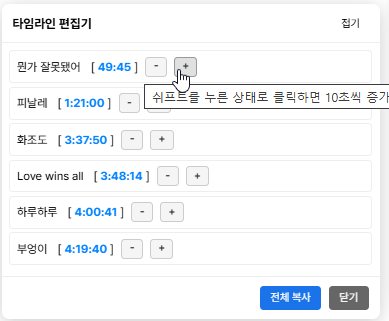
현재 시간 삽입
SOOP VOD 댓글 작성·수정 시, 재생 중인 시점을 타임라인 형식으로 넣을 수 있습니다.
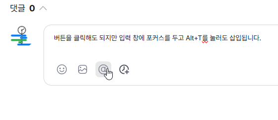
이전 채팅 복원
SOOP 재생을 시작한 시점 이전 채팅을 일정 구간만큼 불러옵니다.
- 복원 구간(기본 30초 등)은 설정에서 조절합니다.
- 이모티콘만 있는 채팅 제외 옵션이 있습니다.
~초 전툴팁을 누르면 해당 채팅이 나온 시점으로 이동합니다.- 다음 복원 구간이 0초에 닿으면 복원 버튼이 비활성화됩니다.
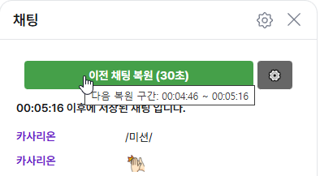
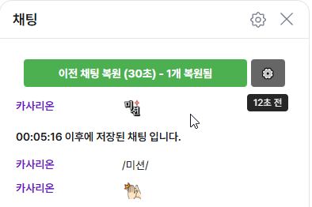
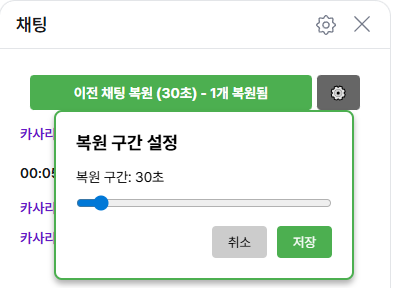
데모

시그니처·기본·ogq 이모티콘 등은 표시를 맞추려 했으나, 스트리머 채팅 등은 아직 제한이 있을 수 있습니다.
RP 닉네임 패널
개발이 잠정 중단된 기능입니다. 재개 시기는 정해져 있지 않습니다.
SOOP · CHZZK 방송에서 쓰는 RP(롤플레이) 닉네임과 실제 스트리머 매핑을 패널로 보려는 기능이었습니다.
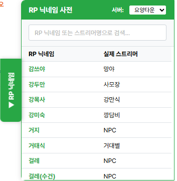
데이터는 확장에 포함된 JSON을 기준으로 하며, 스트리머·캠페인별로 다를 수 있습니다.
반복 재생
SOOP VOD 플레이어 설정 메뉴에 반복 재생 항목이 추가됩니다.
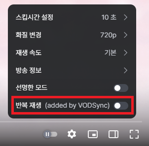